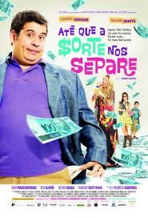

Até que a sorte nos separe
Tino é um pai de família que tem sua rotina transformada ao ganhar na loteria. Em dez anos, o fanfarrão e sua mulher Jane gastam todo o dinheiro com uma vida de ostentação. Quando descobre que está falido, ele é obrigado a aceitar a ajuda de seu vizinho Amauri, um consultor financeiro nada divertido e extremamente econômico. Jane engravida do terceiro filho e Tino faz de tudo para esconder da esposa que estão na pior, pois a recomendação médica é que a grávida evite fortes emoções.
Assista aqui!